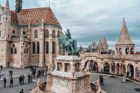
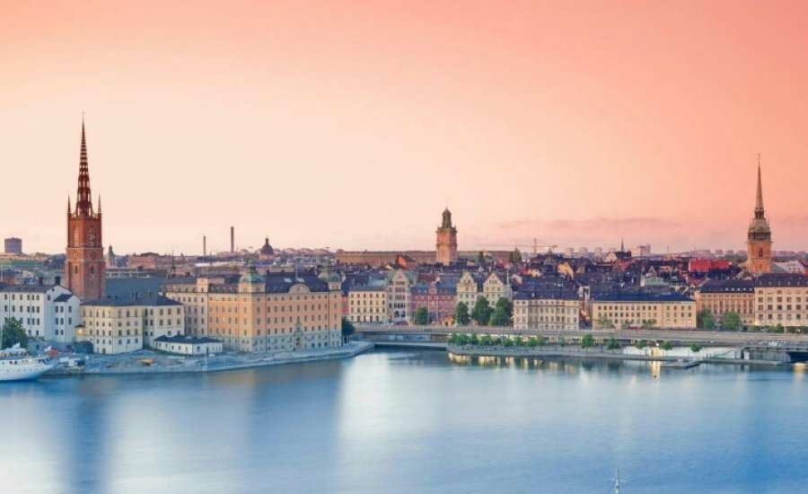

Максим Жуков 4-е-28
Сторінка зі списками та зображеннями
Завдання 1
До кольорової гамми райдуги входять:
- Червоний
- Жовтогарячий
- Жовтий
- Зелений
- Блакитний
- Синій
- Фіолетовий
До кольорової гамми райдуги входять:
- Червоний
- Жовтогарячий
- Жовтий
- Зелений
- Блакитний
- Синій
- Фіолетовий
Завдання 2
Європейські країни
Уго́рщина

Уго́рщина (угор. Magyarország [ˈmɒɟɒrorsaːɡ] — «Мадя́рщина») — держава в Центральній Європі з населенням близько 10 мільйонів осіб. Столицею держави є місто Будапешт. Державна мова — угорська. Унітарна держава, парламентська республіка. Більшість вірян є католиками. Межує зі Словаччиною на півночі, Україною — на північному сході (спільний кордон 105 км), Румунією — на південному сході, Сербією та Хорватією — на півдні, Словенією — на південному заході і Австрією — на заході. З 1999 року член НАТО, з 2004 — ЄС. Угорщина розташована в північній частині Середньодунайського басейну, замкненого на заході Альпами, на півночі, сході та південному сході — Карпатами. Більша частина території Угорщини зайнята рівнинами і горбистими ділянками. Дунай ділить Угорщину на дві частини. На сході Тисо-Дунайської низовини знаходиться — Великий Альфельд, обмежений на півночі ланцюгом невисоких гір; найвища гора — Кекеш (1015 м), правобережжя Дунаю займає Дунантуль — височина з горбами 150–200 м, яка перетинається смугою невисоких (400–700 м) Середньоугорських гір (Задунайське середньогір'я). На північному заході країни простягається Мала Середньодунайська низовина (Кішальфельд), обмежена Шопронськими і Кесегськими горами (передгір'я Альп) висотою 500–800 м. Річки Угорщини належать до водного басейну Дунаю. Озера — Балатон (594 км²), Веленце (26 км²), Фертьо (23 км²); водосховище Кишкьоре. Клімат Угорщини помірно континентальний.
Іспанія
Іспа́нія (ісп. España, МФА: [esˈpaɲa]; заст. Гишпа́нія[1] від лат. Hispania), раніше Еспа́нія,[2][3] офіційно Королі́вство Іспа́нія — держава на південному заході Європи. Займає більшу частину Піренейського півострова, Балеарські та Пітіузькі острови в Середземному морі, Канарські острови в Атлантичному океані. Іспанія омивається Середземним морем й Атлантичним океаном. По суходолу Іспанія межує з Португалією на заході (спільний кордон — 1214 км), з Францією — по гребенях Піренейських гір (623 км), з Андоррою (63,7 км), з Гібралтаром та з Марокко. Входить в Євросоюз і НАТО. Іспанія — південноєвропейська країна.
 Вона займає п'ять шостих Піренейського півострова, Балеарські та Пітіузькі острови в Середземному морі та Канарські острови в Атлантичному океані. Піренейські гори важкодоступні та «ізолюють» Іспанію від інших європейських країн, крім Португалії, що займає західну частину півострова. За територією Іспанія є четвертою країною в Європі, після Росії, України та Франції, і є другою за величиною в Європейському Союзі. Іспанія омивається Середземним морем й Атлантичним океаном. По суходолу Іспанія межує з Португалією на заході (спільний кордон — 1214 км), з Францією — по гребенях Піренейських гір (623 км), з Андоррою (63,7 км), з Гібралтаром (1,2 км), з Марокко (м. Сеута — 6,3 км, м. Мелілья — 9,6 км).
Вона займає п'ять шостих Піренейського півострова, Балеарські та Пітіузькі острови в Середземному морі та Канарські острови в Атлантичному океані. Піренейські гори важкодоступні та «ізолюють» Іспанію від інших європейських країн, крім Португалії, що займає західну частину півострова. За територією Іспанія є четвертою країною в Європі, після Росії, України та Франції, і є другою за величиною в Європейському Союзі. Іспанія омивається Середземним морем й Атлантичним океаном. По суходолу Іспанія межує з Португалією на заході (спільний кордон — 1214 км), з Францією — по гребенях Піренейських гір (623 км), з Андоррою (63,7 км), з Гібралтаром (1,2 км), з Марокко (м. Сеута — 6,3 км, м. Мелілья — 9,6 км).
Швеція
Шве́ція (швед. Sverige, [ˈsværjɛ] ( прослухати)), офіційна назва Королівство Швеція (швед.: Аудіо Konungariket Sverigeопис файлу) — держава в Північній Європі на Скандинавському півострові. Межує з Норвегією та Фінляндією, також з'єднана з Данією мостом-тунелем через протоку Ересунн. Займаючи територію у 450 295 км², Швеція є третьою за площею країною Європейського Союзу, і має населення чисельністю 10 мільйонів осіб. Країна загалом має низьку щільність населення у 21 людину на квадратний кілометр, з найвищою концентрацією у південній половині країни. Приблизно 85 % населення живе у міських районах.

Південна Швеція є переважно сільськогосподарською, у той час, як її північна частина — густо покрита лісами. Швеція є частиною географічного регіону Фенноскандія. Нині Швеція є конституційною монархією та парламентською демократією з монархом, що виконує функції глави держави. Столиця — Стокгольм, який також є найбільш густонаселеним містом країни. Роль законодавчої влади виконує однопалатний парламент Риксдаг зі 349 членами. Виконавча влада здійснюється урядом, під головуванням прем'єр-міністра. Швеція є унітарною державою, розділеною на 21 лен та 290 комуни.
Швейцарія
Швейца́рія, також Швайца́рія[джерело?] (нім. die Schweiz, фр. la Suisse, італ. Svizzera, рет. Svizra), офіційна назва Швейца́рська Конфедера́ція (нім. Schweizerische Eidgenossenschaft, фр. Confédération suisse, італ. Confederazione Svizzera, рет. Confederaziun svizra) — нейтральна федеративна республіка в Західній Європі. Датою створення Швейцарської Конфедерації вважають 1 серпня 1291 року, коли три лісові кантони (землі): Урі, Швіц і Унтервальден, відстоюючи незалежність від Габсбурґів, уклали заради оборони «вічний союз» (в рамках «Священної Римської імперії»). Як самостійна держава Швейцарія одержала міжнародне визнання за Вестфальським миром 1648 року. 19 серпня 1798 року в умовах французької окупації було проголошено Гельветійську Республіку, що проіснувала до 1803 року і мала єдину конституцію. Віденський конгрес 1814–1815 рр. встановив кордони Швейцарії, близькі до сучасних, і гарантував її «вічний нейтралітет». 12 вересня 1848 року ухвалено конституцію, що утвердила Швейцарію як єдину федеративну державу. Швейцарія — держава в Центральній Європі з територією 41,3 тис. км². На півночі вона межує з Німеччиною (довжина кордону — 334 км), на заході — з Францією (довжина кордону — 573 км), на півдні — з Італією (довжина кордону — 740 км), на сході — з Австрією (довжина кордону 164 км) і Ліхтенштейном (довжина кордону — 41 км). Північний кордон частково проходить по Боденському озеру і Рейну, який починається в центрі Швейцарських Альп і утворює частину східного кордону. Західний кордон проходить горами Юра, південний — італійськими Альпами і Женевським озером. У Швейцарії можна виділити чотири райони — Північну Швейцарію, Західну, Центральну і Південну.
Португалія
Португа́лія (порт. Portugal) — держава на південному заході Європи. Офіційна назва — Португа́льська Респу́бліка (порт. República Portuguesa). Розташована в західній частині Піренейського півострова. Контролює Азорські острови і Мадейру в Атлантичному океані. На півночі та сході межує з Іспанією. На заході й півдні омивається водами океану. Площа — понад 92 тисячі км² (109-та країна за величиною в світі). За останнім переписом 2011 року населення країни становило понад 10,5 мільйонів осіб. Середня густота населення — 115 особи на км². Столиця — Лісабон. Основне населення — португальці. Офіційна мова — португальська. Панівна релігія — католицизм. Постала на теренах давньоримської провінції Лузітанія. Як держава існує з XI століття, від заснування Португальського графства. Найбільшого розквіту досягла в часи існування королівство Португалія (1139—1910). У XVI—XVII століттях була однією з наддержав Європи та світу. До XIX століття мала великі колонії в Африці, Азії, Бразилії. Після повалення монархії існує у вигляді президентсько-парламентської республіки. Країна-член Європейського союзу (з 1986) і Шенгенської зони (1999). Член ООН, НАТО, ОЕСР, СПК. Основна валюта — євро. Національне свято — 10 червня, День Португалії.